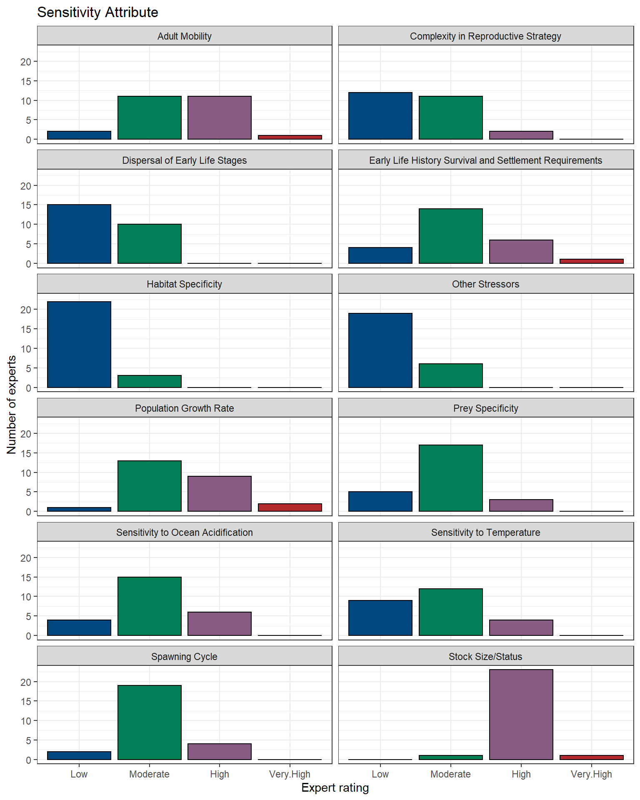

4.6 Climate vulnerability
Climate vulnerability is sourced from Hare et al. (2016). The overall climate score for American plaice was low with low certainty.
4.6.1 Figures

Figure 4.18: American plaice

Figure 4.19: American plaice
4.6.2 Data
Figure 4.20: American plaice